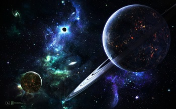
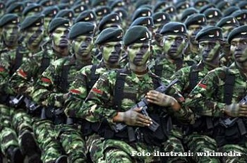

Gallery
 |
 |
 |
Balap motor adalah olahraga otomotif yang menggunakan sepeda motor. Balap motor, khususnya road race, cukup populer di Indonesia. Hampir tiap minggu di berbagai daerah di Indonesia even balap motor diselenggarakan. Selain road race, balap motor jenis lain yang cukup sering diadakan adalah motorcross, drag bike, grasstrack dan supersport. |
Balap mobil (bahasa Inggris: auto racing) adalah suatu cabang olahraga yang melibatkan kendaraan. Balap mobil merupakan salah satu cabang olahraga tontonan yang paling diminati dan juga yang paling dikomersialisasi. Balap mobil pertama kali muncul pada tahun 1895,dan kini menjadi salah satu olahraga paling populer di dunia. |
Sepak bola (bahasa Inggris: Football atau Soccer) adalah cabang olahraga yang menggunakan bola yang umumnya terbuat dari bahan kulit dan dimainkan oleh dua tim yang masing-masing beranggotakan 11 (sebelas) orang pemain inti dan beberapa pemain cadangan. Memasuki abad ke-21, olahraga ini telah dimainkan oleh lebih dari 250 juta orang di 200 negara, yang menjadikannya olahraga paling populer di dunia. |
|  |  |  |
Luar angkasa atau angkasa luar atau antariksa (juga disebut sebagai angkasa), merujuk pada bagian yang relatif kosong dari Jagad Raya, di luar atmosfer dari benda "celestial". Istilah luar angkasa digunakan untuk membedakannya dengan ruang udara dan lokasi "terrestrial". |
Tentara Nasional Indonesia atau biasa disingkat TNI adalah nama sebuah angkatan perang dari negara Indonesia. Pada awal dibentuk bernama Tentara Keamanan Rakyat (TKR) kemudian berganti nama menjadi Tentara Republik Indonesia (TRI) dan kemudian diubah lagi namanya menjadi Tentara Nasional Indonesia (TNI) hingga saat ini. |
Arsitek adalah seorang ahli di bidang ilmu arsitektur, ahli rancang bangun atau ahli lingkungan binaan.Orang yang terlibat dalam perencanaan, merancang, dan mengawasi konstruksi bangunan, yang perannya untuk memandu keputusan yang memengaruhi aspek bangunan tersebut dalam sisi astetika, budaya, atau masalah sosial. |
 |
||
Internet (kependekan dari interconnection-networking) adalah seluruh jaringan komunikasi yang menggunakan media elektronik, yang saling terhubung menggunakan standar sistem global Transmission Control Protocol/Internet Protocol Suite (TCP/IP) sebagai protokol pertukaran paket (packet switching communication protocol) untuk melayani miliaran pengguna di seluruh dunia.Rangkaian internet yang terbesar dinamakan Internet. |
Naruto adalah seorang ninja dari desa Konoha (Konohagakure), sebuah desa fiktif yang konon tersembunyi di antara rimbunnya dedaunan hutan. Sejak kecil ia ditinggal oleh kedua orang tuanya, sehingga ia tidak pernah merasakan bagaimana kasih sayang orang tua kepada anaknya. Dengan dukungan dari teman-teman dan guru-gurunya, Naruto tumbuh menjadi pemuda yang ceria, optimis, dan pemberani. Masashi Kishimoto, pengarang serial manga ini, dikutip dari wawancara terbaru dari Shonen Jump Amerika mengatakan bahwa kehidupannya seperti Naruto ketika dia seumuran dengannya. |
Mobile Legends: Bang Bang adalah sebuah permainan MOBA yang dirancang untuk ponsel. Kedua tim lawan berjuang untuk mencapai dan menghancurkan basis musuh sambil mempertahankan basis mereka sendiri untuk mengendalikan jalan setapak, tiga "jalur" yang dikenal sebagai "top", "middle" dan "bottom", yang menghubungkan basis-basis. |